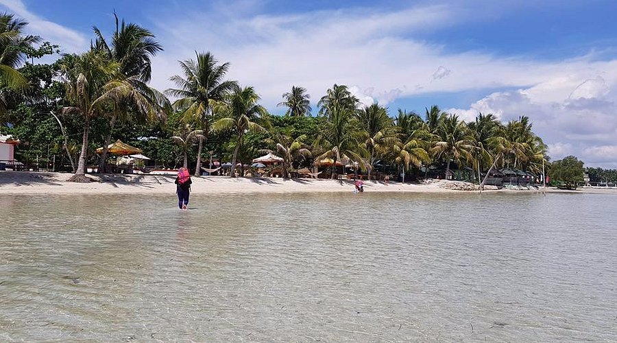
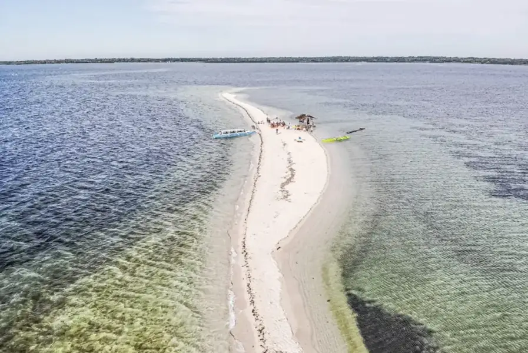

Tondol Beach is a shallow, white-sand beach in Anda, Pangasinan, Philippines. It’s known for its wide sandbar at low tide, calm clear waters, and family-friendly, laid-back vibe rather than big commercial resorts or nightlife.
Tondol Beach stretches along the northern tip of Anda Island, Pangasinan, with wide, shallow waters that recede during low tide and reveal long, sandy flats perfect for walking and wading. This gives the beach a unique coastal character, where the sea meets the sand in gentle waves and expansive shallow areas ideal for families and beachcombers.
The area still feels relaxed and provincial, with simple beachfront cottages, scattered palm trees, and local eateries dotting the shore. Many visitors enjoy wandering out toward nearby small islands visible on the horizon during low tide, adding to the sense of space and natural beauty.

Tondol Beach is perfect for relaxed seaside activities. Visitors often swim and wade in the calm, shallow water, while beachgoers bring volleyballs or mats for lounging on the sand. During low tide, most of the shoreline becomes exposed sandbar, making it fun to stroll far out toward the sea and take photos.
Some locals offer occasional boat rides or short boat trips to nearby islets like Tanduyong Island and Panacalan Sandbar for exploration or picnics. The beach’s gentle waters also make it suitable for casual paddleboarding or snorkeling near the shore.

Unlike more commercialized beaches, Tondol Beach is known for its quieter and more laid‑back vibe. Most accommodations are family‑run inns or simple beach cottages, and the crowd tends to be mostly locals or Filipino tourists seeking an inexpensive and peaceful seaside getaway.
Weekends and holidays tend to be busier, but on regular weekdays the beach is relatively tranquil, letting visitors enjoy relaxing walks along the shore or unobstructed views of the horizon.
Entrance fees to Tondol Beach are generally small and collected by the barangay or resort owners to help maintain the area. Cottages and parking also often come with nominal charges.
Facilities along the beach remain basic — simple restrooms and eateries are available, but many visitors choose to bring snacks and supplies for a full day by the shore. Planning ahead ensures a smooth and comfortable day trip.